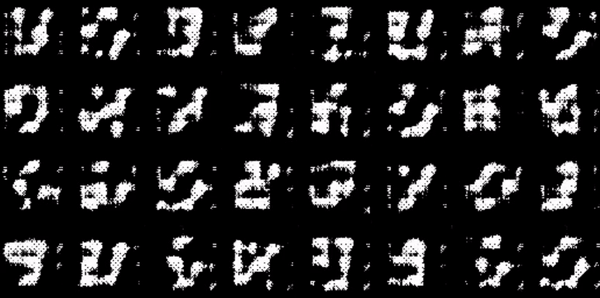
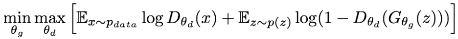
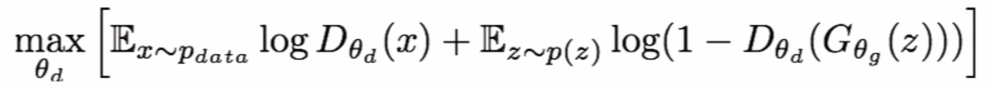
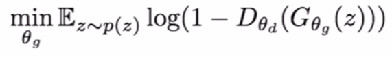
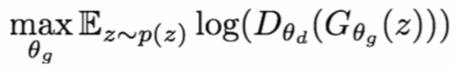
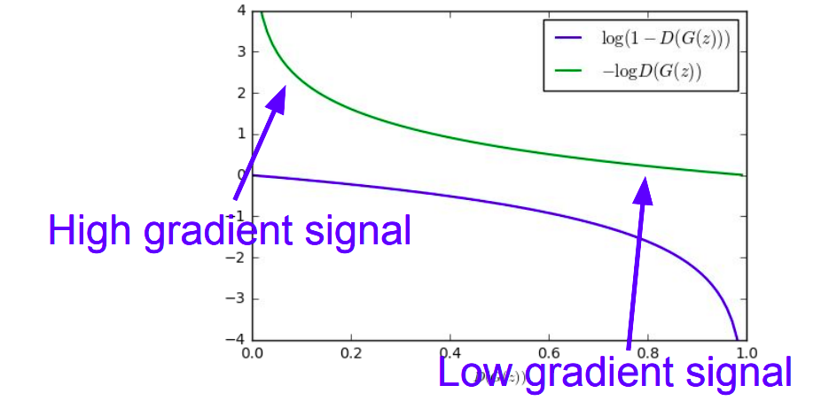
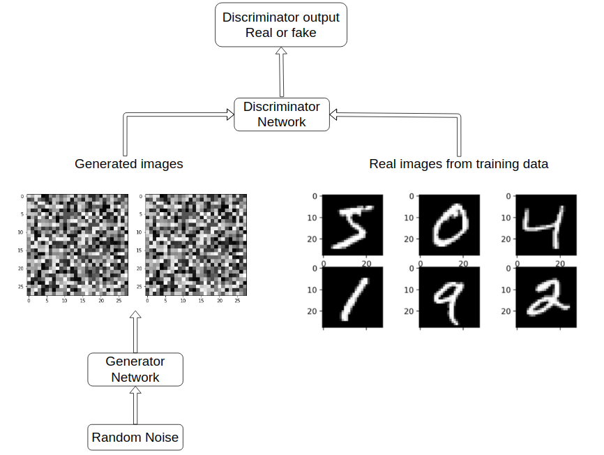
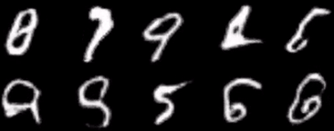

Experimenting With GANs

This gif showcases generated samples from a GAN trained on the MNIST dataset. Link to project repository.
Background :
Last saturday, I was browsing YouTube on my phone when the algorithm suggested me a video on GANs by Computerphile. Until that point I had a vague idea of what GANs were, mostly derived from conversations with my brother, but I didn't really know how they worked.
Anyways, I watched the whole video and was heavily impressed by the whole notion of making computers generate new real-looking data. Rob Miles did an excellent job at explaining the core concepts, and the best part is, he did it all using simple easy-to-grasp examples.
Diving Deeper :
I spent the next couple days watching lectures on GANs and making notes along the way, trying to wrap my head around the math behind it. This Stanford lecture by Serena Yeung was the best one I found. I also had to refer to the following papers multiple times :
- Generative Adversarial Networks by Ian Goodfellow et al.
- The DCGAN paper by Alec Radford, Luke Metz, Soumith Chintala.
What I understood :
Two neural networks, the Generator(G) and the Discriminator(D) are pitted against one another and trained simultaneously. But what are they aiming to accomplish?
- The Discriminator aims to distinguish between real and generated samples.
- The Generator aims to produce real-looking samples/images to fool the Discriminator.
In simple terms, the Generator is like an art-forger who is trying to sharpen its skills, and the Discriminator is like an art-expert which the generator wants to fool.
The Math :
The 2 networks are trained in a minimax game formulation:

- x represents a real sample.
- z is random vector in the latent space, or lets just say random noise.
- D(x) is the discriminator output for a real sample x.
- G(z) is the generated output from the generator net with noise z given as input.
- D(G(z)) is the discriminator output for generated fake data G(z).
- E represents the expected value or the average.
- The Discriminator wants to make sure D(x) is close to 1 and D(G(x)) is close to 0. It attempts to maximise the following objective.

- The Generator wants to make sure D(G(z)) is close to 1 i.e. fool the discriminator into thinking generated G(z) is real. It attempts to minimise the following objective.

But in practice, optimizing this generator objective does not work well because it has vanishing gradients early on. So instead, people use a different objective function as shown below:

This(green line) has a higher gradient signal for bad samples i.e. towards the left, hence the model learns more in region of bad samples. The purple line is almost flat (weak gradients) towards the left, which is not suitable for training.

If all goes well:
The Generator generates samples indistinguishable from real samples. And the discriminator is forced to guess (with a probability of ½).
Applying what I learned - Generating Handwritten Digits using PyTorch:
At this point, I had a fair grip over how GANs work. so I decided to experiment further. Below is a diagram that explains the flow of data through the models.

I used 2 Convolutional Neural Networks, one as the discriminator and one as a generator. This architecture is inspired from the famous DCGAN paper by Alec Radford, Luke Metz, Soumith Chintala. I also copied the parameters and guidelines mentioned in the paper which is the reason why I got reasonably good results. I also learned using tensorboard on Google Colab on the way :)
Some fake samples from the Generator Network are illustrated below.

These samples are far from perfect. In fact they barely look like hand-written digits. But the sheer fact that this is something 'imagined' from scratch by the computer doesn't fail to astound me. If you have read this far, feel free to check out the project repository.